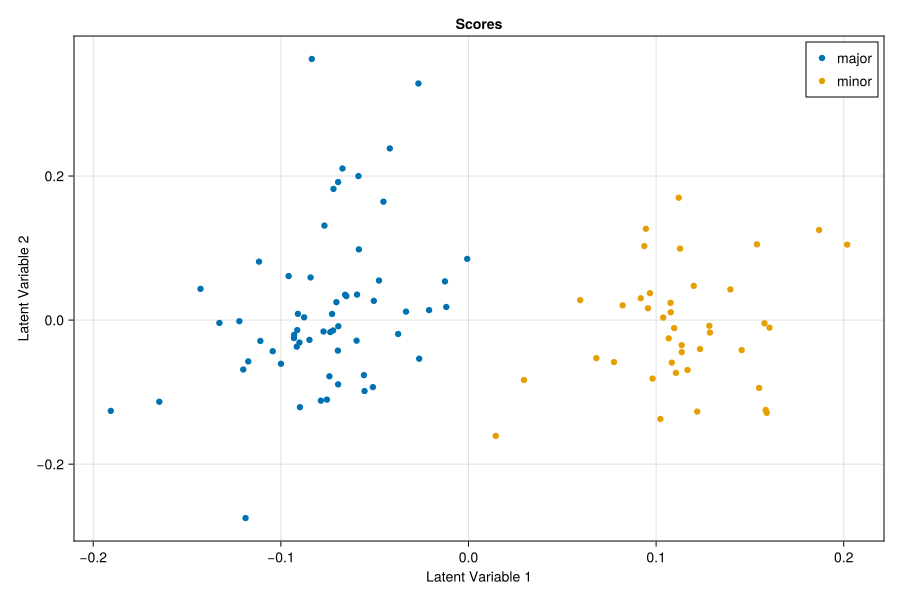

NCPLS.jl
NCPLS.jl provides a Julia implementation of the N-way Canonical Partial Least Squares (N-CPLS) algorithm, as proposed by Liland et al. (2022), for both regression and discriminant analysis of tensor-valued predictors. This method extends the CPLS approach introduced by Indahl et al. (2009), which was originally designed for matrix-shaped predictors. The matrix-based approach is implemented in the Julia package CPPLS.jl, which additionally incorporates the "power" parameter extension outlined by Indahl (2009) and Liland & Indahl (2009)—hence the additional "P" in the acronym.
Installation
The package is currently unregistered, so install it directly from GitHub:
julia> ]
pkg> add https://github.com/oniehuis/NCPLS.jlThen load it with:
julia> using NCPLSScope
The package supports supervised latent-variable modelling with numeric response matrices, categorical class labels, and hybrid response blocks that combine class-indicator columns with continuous traits. Fitting is controlled through NCPLSModel, which separates model configuration from the data passed to fit. The resulting fitted models provide prediction, class assignment where a class block is defined, latent projections, regression coefficients, fitted values, residuals, and labels or metadata retained from model fitting.
NCPLS.jl includes helper functionality for common preprocessing and encoding tasks, including one-hot encoding of class labels and utility functions used in chemometric and multivariate workflows. In addition, the package provides dedicated cross-validation and permutation-testing routines for regression and discriminant analysis, together with visualization helpers for score plots, coefficient landscapes, loading-weight landscapes, and multilinear weight profiles. Fitting can also include optional additional responses through Yadd, which influence component extraction but are not themselves prediction targets, and optional observation weights for weighted preprocessing and supervised fitting. The dedicated discriminant-analysis cross-validation helpers target categorical labels or pure one-hot class-indicator matrices; hybrid response workflows rely on the more general nested cross-validation functions with custom callbacks.
Quick Start
using NCPLS
using Statistics
using CairoMakie
data = synthetic_multilinear_hybrid_data(
nmajor=60,
nminor=40,
mode_dims=(40, 30),
orthogonal_truth=true,
integer_counts=false
)
model = NCPLSModel(
ncomponents=2,
multilinear=true,
orthogonalize_mode_weights=true
)
mf = fit(
model,
data.X,
categorical(data.sampleclasses_string);
Yadd=data.Yadd,
obs_weights=data.obs_weights,
samplelabels=data.samplelabels,
predictoraxes=data.predictoraxes
)
plt = scoreplot(mf; backend=:makie, figure_kwargs=(; size=(900, 600)))
save("quickstart_scoreplot.svg", plt)
pred_classes = predictclasses(mf, data.X, 2)
class_accuracy = mean(pred_classes .== data.sampleclasses_string)0.99Why Separate from CPPLS.jl?
NCPLS.jl is kept separate from CPPLS.jl even though the two packages share much of the same modelling philosophy. CPPLS.jl targets matrix-valued predictors, whereas NCPLS.jl targets genuinely multiway predictors and therefore needs different data representations, multilinear loading-weight routines, and visualization workflows. Keeping the packages separate makes the implementation easier to maintain and the user-facing API easier to understand. If both packages are loaded into the same session, be sure to use fully qualified names to disambiguate (e.g., NCPLS.predict vs. CPPLS.predict).
Related Packages
- CPPLS.jl: closely related CPLS implementation for matrix-valued predictors rather than multiway predictors.
Disclaimer
NCPLS.jl is provided "as is," without warranty of any kind. Users are responsible for independently validating all outputs and interpretations and for determining suitability for their specific applications. The authors and contributors disclaim any liability for errors, omissions, or any consequences arising from use of the software, including use in regulated, clinical, or safety-critical contexts.
References
- Indahl UG (2005): A twist to partial least squares regression. Journal of Chemometrics 19: 32–44. DOI.
- Indahl UG, Liland KH, Naes T (2009): Canonical partial least squares — a unified PLS approach to classification and regression problems. Journal of Chemometrics 23: 495-504. DOI.
- Liland KH, Indahl UG (2009): Powered partial least squares discriminant analysis. Journal of Chemometrics 23: 7-18. DOI.
- Liland KH, Indahl UG, Skogholt J, Mishra P (2022): The canonical partial least squares approach to analysing multiway datasets—N-CPLS. Journal of Chemometrics 36: e3432. DOI.
- Smit S, van Breemen MJ, Hoefsloot HCJ, Smilde AK, Aerts JMFG, de Koster CG (2007): Assessing the statistical validity of proteomics based biomarkers. Analytica Chimica Acta 592: 210-217. DOI.